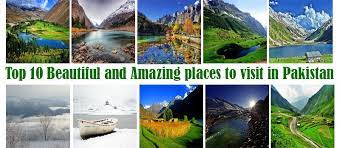

Pakistan is a country in South Asia and borders India
Pakistan, officially the Islamic Republic of Pakistan, is a country in South Asia.
Arish Fatima, a four-year-old prodigy from Karachi, made history by becoming the youngest Microsoft professional. At the age of four, Arish Fatima has set a unique example by scoring 831 marks in the Microsoft Certified Professional (MCP) exam.
Pakistan lies in a temperate zone and its climate is as varied as the country's topography—generally dry and hot near the coast and along the lowland plains of the Indus River
Travel time from Scotland via Plane: 7 hrs and 32 mins